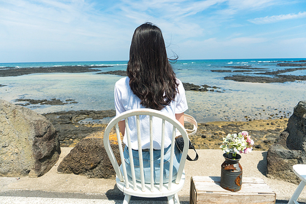
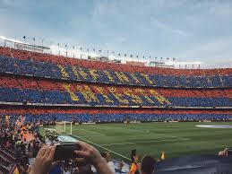
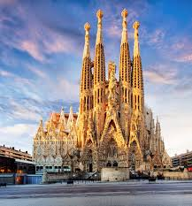

세상에 좋은 곳은 아주 아주 많고 저도 다 가본 건 아니지만....
그래도 제가 가본 곳 중에서 best를 소개할게요^^
혹시 더 궁금한 점 있으시면 언제든지 물어봐주세요

Best Of Best
Just In My View
Kyoto
2024년 5월에 다녀옴.
교토는 제 첫 혼자여행 장소였어요ㅎㅎ
저 빼고 주변 지인들이 모두 다녀왔길래 그냥 저 혼자 훌쩍 떠나버렸어요 ㅎㅎ
제가 느낀 교토는 슬로우시티 + 역사 + 전통 + 대도시의 느낌을
골고루 가지고 있답니다.
생각보다 도시가 커서 짧은 시간에 다 보기엔 무리가 있어요.
그래서 그런지 교토는 재방문율이 매우 높은 도시라고 하네요
Barcelona
2017년 9월에 다녀옴


제가 은근 축덕이라서
살면서 메시 한번 보겠다고 바르셀로나를 갔어요!!
결국 빌바오전 직관 성공!!
덕분에 겸사겸사 여행도 했는데 꼭 다시 가고 싶은 도시에요!!
맛있는 것도 너무
많구 바르셀로나 해변도 진짜 멋져요
샹그리아에 빠에야, 하몽, 감바스.....너무 그리워요 ㅠㅠㅠ
Phuket
2022년 5월에 다녀옴
푸켓은 코로나 시기 이전 마지막 여행지였어요..
(그 다음해가 코로나일줄은.... 상상도 못한....)
성인이 되고부터는 가족이 다들 시간이 잘 안맞았었는데
우연히 시간이 맞아서
어디든 가쟈!하고
큰
기대 없이 갔어요 사실ㅎㅎ
솔직히 푸켓 본섬은 비추... 쪼그만 배를 한번 더 타고 라차섬을 가야해요!!!
거긴 정말 제가 본 곳 중에서 최고!!
현실이 하나도 생각
안나요ㅋㅋㅋㅋㅋ